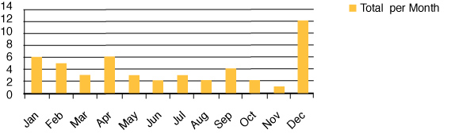
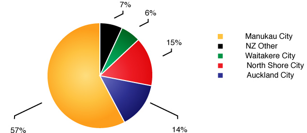

On average, two patients per month are admitted to Starship Hospital as the result of a home driveway injury. The injuries these children sustain are severe. The incidence of this kind of injury has not changed significantly over the past 15 years. A typical scenario involves a 2 year old child reversed over in the domestic driveway by a family member.
Driveway Accident Frequency
Risk FactorsAlthough the ages of the children ranged from between 1 and 10 years, very young children are most at risk. The median age is under two years (23 months). Boys (58%) are more likely to be injured than girls. Children of Maori and Pacific descent are markedly over-represented in these types of accidents.
Most of the children (71%) are injured on their own home driveway. 21% are injured on a relative’s driveway and 8% on a neighbour’s driveway. The majority of the accidents (57%) occur in South Auckland, followed by the West (6%), Central (14%), North Shore (15%) and NZ Other 7%. Children from less well off families are at greater risk of injury. Close to 40% of children come from families who fit into the poorest (in socio-economic terms) 10% of the population.
Timing
Timing - Most of the accidents (47%) occur in the afternoon between 4pm and 7pm or in the morning between 10am and midday. The accidents are more likely to occur in Summer, between December and February (39%) than other times of the year.
DriverThe parent of the child is driving the vehicle in over a third of the cases (39%). However, the drivers included relatives (28.6%), friends and neighbours (18.2%) and commercial drivers (5.2%). Many of the drivers (19) reported seeing the child in a safe place prior to the accident.